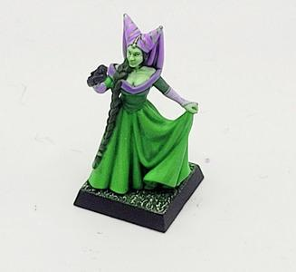
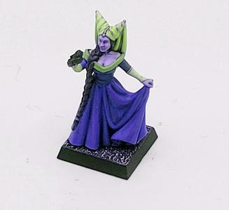

Color Channel Manipulation with libvips
Standard Color Channels
Let's take a high level look at the normal color channels in an image. Under most typical situations we think about color as being stored in three or four color channels, the most common being red, green, blue, and optionally an alpha or transparency channel. A single channel to represent greyscale or a two channel image to represent greyscale with transparency is also reasonably common.
In all cases it's useful to always think about channels as independent greyscale images that our rendering application treats as the intensity level of some particular color or attribute.
The common case scenario of wanting to store RGB, RGBA, or Greyscale are so useful that many file formats bake in directly into their specification.
What's key is that the file format specification provides a contract so that all applications that support a particular format can agree around how to encode and render some raw data into an image.
Playing With Channels
Decomposition
Let's start by decomposing an image into channels.

require 'vips'
source_file = Vips::Image.new_from_file('lady.jpg')
source_file.bandsplit.each_with_index do |channel, index|
channel.write_to_file("lady_#{'RGB'[index]}.jpg")
end
Recomposition
We can now recombine channels in various orders to get...interesting results. Keep in mind that our red channel is much more intense than our other two channels so it will emphasize whichever channel we place it in.

require 'vips'
lady_r = Vips::Image.new_from_file('lady_R.jpg')
lady_g = Vips::Image.new_from_file('lady_G.jpg')
lady_b = Vips::Image.new_from_file('lady_B.jpg')
lady_r.bandjoin([lady_g, lady_b]).copy(interpretation: :srgb).write_to_file('lady_rebuilt.jpg')
lady_g.bandjoin([lady_r, lady_b]).copy(interpretation: :srgb).write_to_file('lady_remixed.jpg')
lady_g.bandjoin([lady_b, lady_r]).copy(interpretation: :srgb).write_to_file('lady_remixed2.jpg')
Extra Color Channels
So why should we can about additional color channels? Some applications, like Photoshop and Gimp, use the first 3-4 channels as a typical RGB/RGBA preview and give you the option of storing individually colored spot channels, where each channel is given a specific color and the channel is used to represent the intensity of that color present in each pixel. It's quite useful for print applications where specific ink colors are applied to each channel.
A key point here is that this use of extra channels is not specified by any particular standard, it is specific to a particular application's whims. These additional channels are therefore useful if you own both the encoding and rendering of the files and you have a specific useful where encoding additional per-data pixel is somehow useful. Provided the pixel dimensions of the images are the same there's absolutely nothing stopping you from hiding a second image in channels 5 through 9 while channels 1-4 encode an image as normal.
Keep in mind that many image formats do not support non-standard color bands. TIFF files support over four bands so are a great choice if you need to store this kind of image. Some applications, like ImageMagick, will throw out your non-standard bands during their read/write flow, so be careful with these images.
Stack 'em up
Let's make an image that has the same dimensions as our lady image.
convert wizard: -resize 327x300^ -crop 327x300+0+25 wizard.jpg
Now let's hide our wizard behind the image of the lady.
require 'vips'
lady_image = Vips::Image.new_from_file('lady.jpg')
wizard_image = Vips::Image.new_from_file('wizard_cropped.jpg')
lady_image = lady_image.bandjoin_const(255) # Add an alpha channel
lady_image.bandjoin(wizard_image).write_to_file('lady_secret_wizard.tiff')
Most image viewers will just show the lady, but if you open this image in Gimp or Photoshop you will see the wizard in the "channels" menu.
Unstack 'em
Now let's recover our secret wizard image.
require 'vips'
lady_image = Vips::Image.new_from_file('lady_secret_wizard.tiff')
# Starting at the 5th band (0 indexed), extract all but the first 4 bands.
wizard_image = lady_image.extract_band(4, n: lady_image.bands - 4)
wizard_image.write_to_file('revealed.jpg')
Channel Blending
Now that we've got some basics down, let's try channel blending. Essentially the idea is that you can use any greyscale image as a mask for an arbitrary color to overlay semi-transparent colored images on top of each other...you can visualize it a little bit like silk screen printing.
We start by pulling a single channel from our wizard and lady images. These get inverted so that darker regions in the original image are treated as more opaque. Then we use these as transaparency channels on solid color images. The colors in this case are the colors of our silk screen "ink". The resulting channels look like this:
Once we've got our channels assembled, we build a solid white background and overlay our images on top of it.
For the sake of visualizing properly, let's individually blend those channels over white.
...and finally, let's overlay them on each other.
Notice how the resulting image features color blending between the two images.
Any number of input images and colors should work with this technique. Our image choices in this case were arbitrary, but you can use this technique to emulate Photoshop spot color channels.
require 'vips'
def build_solid_color(image, color)
image.copy(interpretation: :srgb).new_from_image(color)
end
lady_image = Vips::Image.new_from_file('lady.jpg')
wizard_image = Vips::Image.new_from_file('wizard_cropped.jpg')
wizard_channel = build_solid_color(background, [200, 200, 255]).bandjoin(wizard_image.extract_band(0).invert)
lady_channel = build_solid_color(background, [100, 100, 0]).bandjoin(lady_image.extract_band(0).invert)
background = build_solid_color(lady_image, [255, 255, 255])
background.composite([wizard_channel, lady_channel], :over, compositing_space: :scrgb).flatten.write_to_file('blended.jpg')
:over blend mode is used to simulate overlapping semi-transparent sheets on a projector.
:scrgb is used as our compositing space because it is a linear RGB colorspace. Always blend in a linear space to get even color mixing.
Keep in mind that when performing operations where colors blend, the overlaying order matters. Observe the difference when we reverse our overlay order.